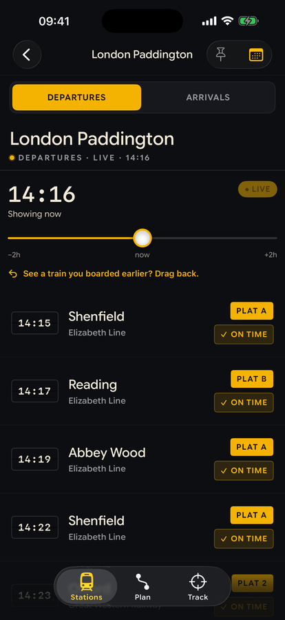
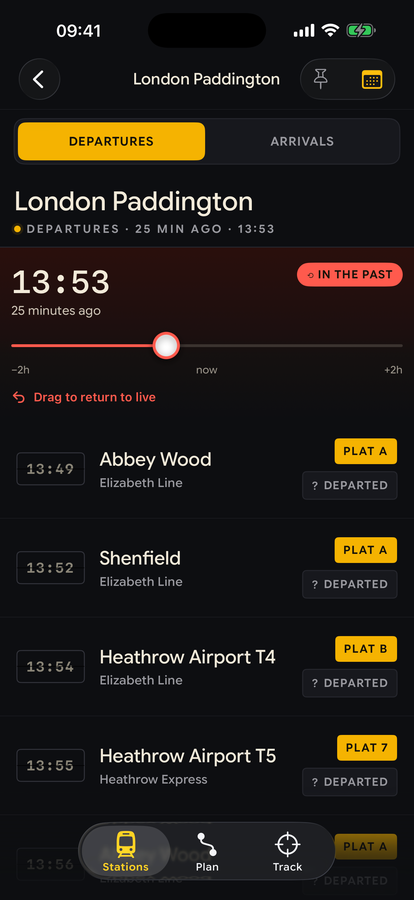
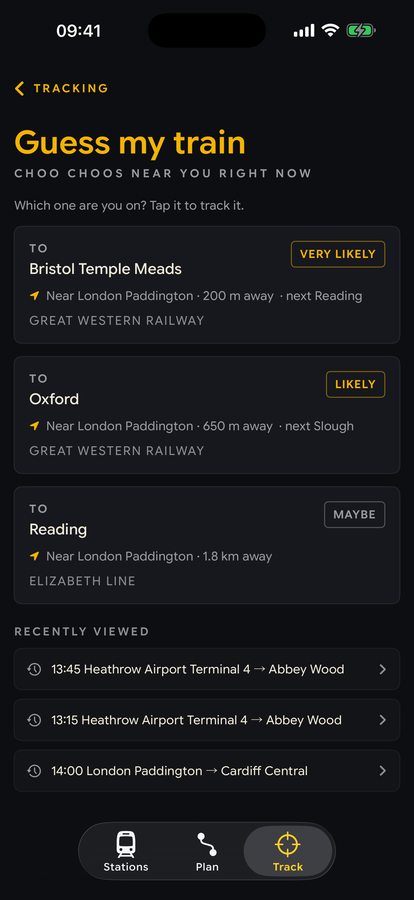
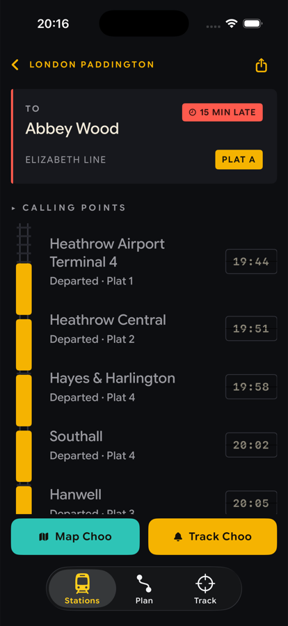
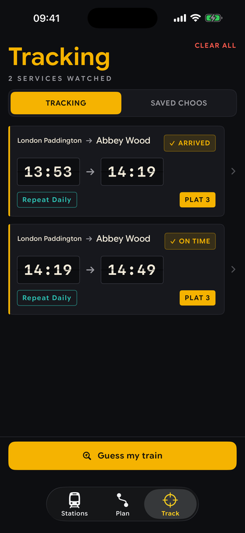

ON IT ALREADY? TRACK IT ANYWAY.
ChooTrack is the UK rail app for the train you're actually on — even one that's already pulled out of the station. Every other app drops it the moment it leaves; ChooTrack lets you grab the time scrubber, drag the departure board back in time, tap the service you're sitting on and track it live to the platform. Watch the board on the right travel 25 minutes into the past.



On a train?
It knows which one.
You're aboard, moving, and you never opened the app at the station. Tap Guess my train: one location fix, and ChooTrack shortlists the live services you're most likely sitting on, ranked very likely to possible, with where they are right now.
- “Near London Paddington · 200 m away”: it matches your position to the line, not just the nearest station.
- Pick a candidate and you're straight into the normal track flow: ETA, platform, calling points.
- Works with the rewind: boarded 20 minutes ago? The scrubber already knows your train.
The board is the app
SPLIT-FLAP // EST. LDN PADMonospace on a near-black ground with a one-pixel seam across every tile, legible at arm's length, exactly like the real thing. The board stays dark in every theme, because a station display is always a station display.
A train on
the tracks.
Track a service (even one that departed before you opened the app) and the detail screen becomes a literal train on the tracks: passed stops are linked amber carriages, the current stop is a glowing locomotive, late stops run coral. The Track tab keeps every journey's live ETA a glance away, re-arms your commute with Track daily, and rides your Lock Screen as a Live Activity.


Built like a station board. Runs like a stopwatch.
Plan A→B
Multi-leg journey planning with per-leg tracking, so each change gets its own live ETA, platform, and delay state. Even to a Tube stop: Billingshurst → Oxford Circus is a real journey now.
Underground, opened up
A cross-city change shows the actual metro legs — Victoria line, 4 stops, drawn in the line's own colour. Our own model of London, Glasgow and Newcastle: 388 stations, priced by frequency, no TfL account in sight.
Honest about buses
A rail replacement bus says so before you set off — teal, loud, and impossible to miss — instead of dressing up as a train and hoping.
Save your choo
The journey you make every week, saved. One tap re-runs it for today with live times, and every leg still tracks to your Lock Screen.
Meet arrivals
Flip any board to arrivals, framed for meeting someone off a train: where it's from, when it lands, which platform.
Grinding haptics
The scrubber ratchets per minute with firmer notches every five and a solid thunk at now. Boards click. Tabs snap.
Fuzzy search
“pad”, “paddington”, or “lpd” all find London Paddington: CRS codes, prefixes and substrings, matched entirely on-device.
Any day's board
A calendar flips the board to another date for planning ahead. The rewind stays reserved for today.
Nearest stations
One tap lists the closest stations within your radius, with pinned favourites and recents a swipe away.
One board.
Five liveries.
Not naive palette swaps. Each theme is re-designed token by token — two of them change the typeface and the spacing as well — and the mechanical boards stay dark in all of them. These are the real screens; try them:
Dark: the original Split-Flap
Warm amber on near-black, coral for the past, teal for on-time. The whole app reads like the big board at Paddington after dark.
How ChooTrack
actually works.
No mystery meat. This is the whole machine: what leaves your phone (almost nothing), where the train data comes from (three official feeds), and how updates reach your Lock Screen without the app even being open.
* Your location leaves your phone only when you tap “Guess my train”, and only to ChooTrack’s own server, never to the rail feeds.
One server, not many APIs
The app never talks to rail APIs directly. Every request goes to ChooTrack’s own backend, and the only things it ever sends are the journey you’re tracking, plus a single location fix if you use Guess my train.
Three official sources
Boards come from National Rail Enquiries (LDBWS, licensed via the Rail Data Marketplace). Live running, where a train actually is, its delays and platforms, comes from Realtime Trains. The timetable comes from Network Rail itself.
A timetable that sleeps at night
Network Rail’s national SCHEDULE feed, the full GB timetable, is refreshed on the server every night at around 3am. By morning it has been chopped into the quarter of a million hops that power the journey planner just below.
A polite API citizen
The backend caches hard, a station’s board is reused for around 25 seconds, and keeps a global cap on calls to the upstream feeds, so ChooTrack stays a considerate consumer of the industry’s data.
Push, not polling
Track a train and the server watches it for you, pushing every change to your Lock Screen Live Activity through Apple’s push service. The app doesn’t need to be open, or even running.
Delay chips
“On time”, “+4 late”, platform changes and cancellations come from comparing the booked timetable against the expected and actual times in the live feeds, the same arithmetic a station announcer does.
No direct train?
It finds the way.
Ask for Billingshurst to Edinburgh and no single train will take you. The planner stitches one anyway: Southern to Three Bridges, Thameslink to Blackfriars, a short Tube or walk to King's Cross, then LNER all the way north. Two changes and a cross-London transfer, joined up automatically. Here is the whole machine, from the nightly build to the journey it hands you.
The output, for Billingshurst to Edinburgh:
- Billingshurstno direct train exists
- Southern✓ trackable
- Three Bridgeschange · 5 min minimum
- Thameslink✓ trackable
- Blackfriarsoff here for the Tube
- Tube / walknot a change
- King's Crosschange · London terminal
- LNER✓ trackable
- Edinburgharrival
Changes you can make
A change is only offered when you can genuinely make it: a 5 minute minimum by default, longer at the big stations, and 15 minutes at London terminals like King's Cross.
Cross-London, built in
A built-in table of fixed links covers the Tube and walking hops between London terminals, Blackfriars to King's Cross among them, with deliberately cautious allowances. They appear in a plan as a transfer step and are never counted as a change.
Every leg stays trackable
Each leg keeps its real service identity, so the signature trick works mid-journey: track the exact train you are sitting on, even one that left before you opened the app.
No accounts. No ads. No analytics.
Nothing to sign up for, nothing tracking you. The full detail of what the app stores (spoiler: your favourite stations, on your phone) is in the policy.
Departing
Q3 2026.
ChooTrack arrives on the App Store in Q3 2026: live departures, arrivals, the rewind, Guess my train, journey planning, widgets and all five themes. Free, no account, no faff.